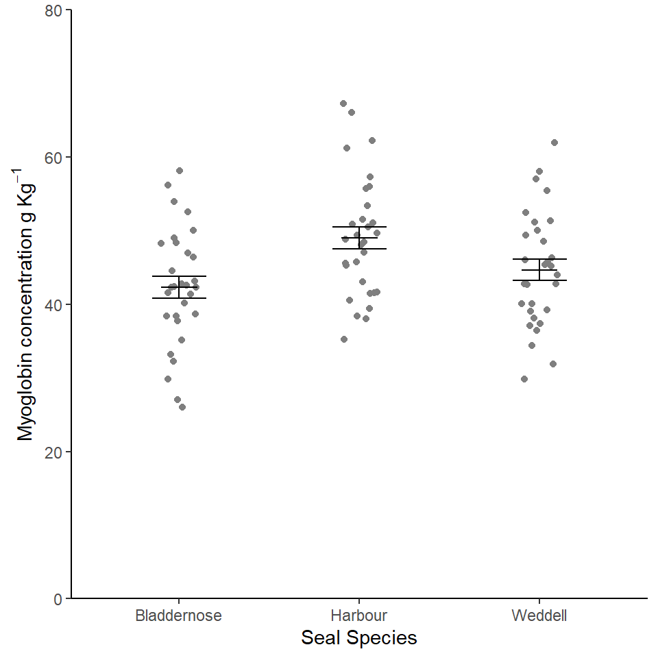
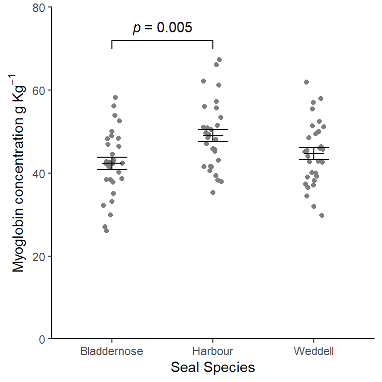
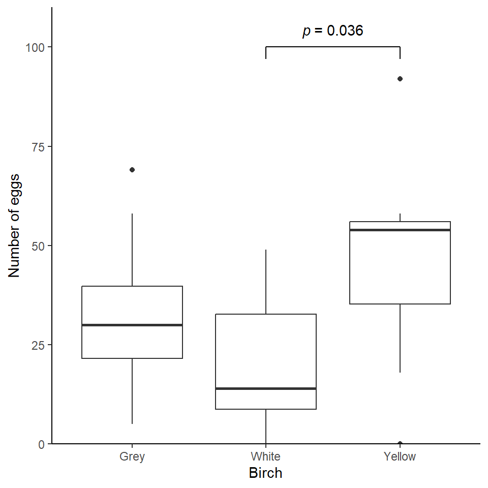

| species | mean | std | n | se |
|---|---|---|---|---|
| Bladdernose Seal | 42.31600 | 8.020634 | 30 | 1.464361 |
| Harbour Seal | 49.01033 | 8.252004 | 30 | 1.506603 |
| Weddell Seal | 44.66033 | 7.849816 | 30 | 1.433174 |
Workshop
One-way ANOVA and Kruskal-Wallis
Introduction

Session overview
In this session you will get practice in choosing between, performing, and presenting the results of, one-way ANOVA and Kruskal-Wallis in R.
Philosophy
Workshops are not a test. It is expected that you often don’t know how to start, make a lot of mistakes and need help. It is expected that you are familiar with independent study content before the workshop. However, you need not remember or understand every detail as the workshop should build and consolidate your understanding. Tips
- don’t worry about making mistakes
- don’t let what you can not do interfere with what you can do
- discussing code with your neighbours will help
- look things up in the independent study material
- look things up in your own code from earlier
- there are no stupid questions
Key
These four symbols are used at the beginning of each instruction so you know where to carry out the instruction.
 Something you need to do on your computer. It may be opening programs or documents or locating a file.
Something you need to do on your computer. It may be opening programs or documents or locating a file.
 Something you should do in RStudio. It will often be typing a command or using the menus but might also be creating folders, locating or moving files.
Something you should do in RStudio. It will often be typing a command or using the menus but might also be creating folders, locating or moving files.
 Something you should do in your browser on the internet. It may be searching for information, going to the VLE or downloading a file.
Something you should do in your browser on the internet. It may be searching for information, going to the VLE or downloading a file.
A question for you to think about and answer. Record your answers in your script for future reference.
Getting started
Start RStudio from the Start menu.
Go the Files tab in the lower right pane and click on the ... on the right. This will open a “Go to folder” window. Navigate to a place on your computer where you keep your work. Click Open.
Make an RStudio project for this workshop by clicking on the drop-down menu on top right where it says Project: (None) and choosing New Project, then New Directory, then New Project. Navigate to the data-analysis-in-r-2 folder and name the RStudio Project week-4.
Make new folders called data-raw and figures. You can do this on the Files Pane by clicking New Folder and typing into the box that appears.
Make a new script then save it with a name like one-way-anova-and-kw.R to carry out the rest of the work.
Add a comment to the script: # One-way ANOVA and Kruskal-Wallis and load the tidyverse (Wickham et al. 2019) package
Exercises
Myoglobin in seal muscle
The myoglobin concentration of skeletal muscle of three species of seal in grams per kilogram of muscle was determined and the data are given in seal.csv. We want to know if there is a difference between species. Each row represents an individual seal. The first column gives the myoglobin concentration and the second column indicates species.
Save a copy of the data file seal.csv to data-raw
Compare seal.csv and adipocytes.txt by opening the file. You can do this in RStudio by clicking on the files in the files window.
Read in the data and check the structure. I used the name seal for the dataframe/tibble.
What kind of variables do you have?
Exploring
Do a quick plot of the data.You may need to refer to a previous workshop
Summarising the data
Do you remember Look after future you!
If you followed that tip you’ll be able to open that script and whizz through summarising,testing and plotting.
Create a data frame called seal_summary that contains the means, standard deviations, sample sizes and standard errors for each species.
You should get the following numbers:
Applying, interpreting and reporting
We can now carry out a one-way ANOVA using the same lm() function we used for two-sample tests.
Carry out an ANOVA and examine the results with:
Call:
lm(formula = myoglobin ~ species, data = seal)
Residuals:
Min 1Q Median 3Q Max
-16.306 -5.578 -0.036 5.240 18.250
Coefficients:
Estimate Std. Error t value Pr(>|t|)
(Intercept) 42.316 1.468 28.819 < 2e-16 ***
speciesHarbour Seal 6.694 2.077 3.224 0.00178 **
speciesWeddell Seal 2.344 2.077 1.129 0.26202
---
Signif. codes: 0 '***' 0.001 '**' 0.01 '*' 0.05 '.' 0.1 ' ' 1
Residual standard error: 8.043 on 87 degrees of freedom
Multiple R-squared: 0.1096, Adjusted R-squared: 0.08908
F-statistic: 5.352 on 2 and 87 DF, p-value: 0.006427Remember: the tilde (~) means test the values in myoglobin when grouped by the values in species. Or explain myoglobin with species
What do you conclude so far from the test? Write your conclusion in a form suitable for a report.
Can you relate the values under Estimate to the means?
HERE ********
The ANOVA is significant but which means differ? We need a post-hoc test. A post-hoc (“after this”) test is done after (and only after) a significant ANOVA test. The ANOVA tells you at least two of means differ, the post-hoc test tells you where the differences are. There are several possible post-hoc tests. A popular option is the Tukey Honest Significant Difference test.
Carry out a Tukey HSD with:
TukeyHSD(mod)Error in UseMethod("TukeyHSD"): no applicable method for 'TukeyHSD' applied to an object of class "lm"Each row is a comparison between means. The ‘diff’ column is the difference between the means the ‘p adj’ column indicates whether that difference is significant.
A plot can be used to visualise the result of the post hoc and make it easier to understand
Use the generic plot() function to plot the post-hoc:
Error in UseMethod("TukeyHSD"): no applicable method for 'TukeyHSD' applied to an object of class "lm"You may want to  . This shows the confidence intervals on the differences between the means and the dashed vertical line is at zero so if the confidence interval crosses that line (i.e., the C.I. includes zero) then the means do not differ significantly.
. This shows the confidence intervals on the differences between the means and the dashed vertical line is at zero so if the confidence interval crosses that line (i.e., the C.I. includes zero) then the means do not differ significantly.
What do you conclude from the test?
Check assumptions
We need to examine the residuals. Unlike with t.test we don’t have to calculate them - the object which is created by aov() contains a variable called $residuals.
Also conveniently, the R’s plot() function can used on the output objects of aov()
Plot the model residuals against the fitted values like this:
plot(mod, which = 1)
The group means are the fitted (or predicted) values; each residual is the difference between the mean and the actual value.
What to you conclude?
To examine normality of the model residuals we can do a histogram
hist(mod$residuals)
Use the shapiro.test() on the model residuals
What to you conclude? -
Illustrating
We will produce a figure to go with a significant ANOVA in a report using ggplot2.
Look at the figure we did in the last practical for adiponectin concentration of control and nicotinic acid treated adipocytes.
Notice how the fundamental structure of the plot is the same as we require here, there is just a different number of groups.
We will again use both our seal and seal_summary dataframes.
Create the plot:
ggplot() +
geom_point(data = seal, aes(x = species, y = myoglobin),
position = position_jitter(width = 0.1, height = 0),
colour = "gray50") +
geom_errorbar(data = seal_summary,
aes(x = species, ymin = mean - se, ymax = mean + se),
width = 0.3) +
geom_errorbar(data = seal_summary,
aes(x = species, ymin = mean, ymax = mean),
width = 0.2) +
scale_y_continuous(name = expression(Myoglobin~concentration~g~Kg^{-1}),
limits = c(0, 80),
expand = c(0, 0)) +
scale_x_discrete(labels = c("Bladdernose", "Harbour", "Weddell"),
name = "Seal Species") +
theme_classic()
Notice the use of expression() to allow you to specify special characters. expression() takes strings or LaTeX formatting. Each string or piece of LaTeX is separated by a * or a ~. The * puts them together without a space, and ~ with a space. Kg^{-1}makes the -1 a superscript.
This figure is good …. but it would be nice to show the result of the post-hoc test by annotating the figure.
We can add annotation to a ggplot using annotate()
Look up annotate() in the manual:
?annotateThe examples section might be useful to aid understanding. annotate() takes a geom as its first argument. This can be text segment rect etc. The other arguments are positioning aesthetics which say where the annotation should be placed. We need three segments: two short vertical lines and one long horizontal line. We also need one piece of text to give the \(p\) value.
Add the annotations to the plot:
ggplot() +
geom_point(data = seal, aes(x = species, y = myoglobin),
position = position_jitter(width = 0.1, height = 0),
colour = "gray50") +
geom_errorbar(data = seal_summary,
aes(x = species, ymin = mean - se, ymax = mean + se),
width = 0.3) +
geom_errorbar(data = seal_summary,
aes(x = species, ymin = mean, ymax = mean),
width = 0.2) +
scale_y_continuous(name = expression(Myoglobin~concentration~g~Kg^{-1}),
limits = c(0, 80),
expand = c(0, 0)) +
scale_x_discrete(labels = c("Bladdernose", "Harbour", "Weddell"),
name = "Seal Species") +
# long horizontal. goes from bladdernose (x = 1) to harbour (xend = 2)
# the y and yend are the same
annotate("segment", x = 1, xend = 2,
y = 72, yend = 72,
colour = "black") +
# short horizontal, x and xend are the same at harbour (xend = 2)
# y and yend are slightly apart
annotate("segment", x = 2, xend = 2,
y = 72, yend = 70,
colour = "black") +
# short horizontal, x and xend are the same at bladdernose (x = 1)
# y and yend are slightly apart
annotate("segment", x = 1, xend = 1,
y = 72, yend = 70,
colour = "black") +
# the text
annotate("text", x = 1.5, y = 75,
label = expression(italic(p)~"= 0.005")) +
theme_classic()
Top Tip
Use comments anywhere in the ggplot block to help you remember what each part does. I find this especially useful for labelled the annotations.
Make a new folder called ‘figures’ and write your figure to file. This will allow you to check your understanding of paths.
Leafminers on Birch
Larvae of the Ambermarked birch leafminer, Profenusa thomsoni, feed on the interior leaf tissues of Birch (Betula) species. They do not normally kill the tree but can weaken it making it susceptible to attack from other species. Researchers are interested in whether there is a difference in the rates at which white, grey and yellow birch are attacked. They introduce adult female P.thomsoni to a green house containing 30 young trees (ten of each type) and later count the egg laying events on each tree. The data are in leaf.txt.
Exploring
Read in the data and check the structure. I used the name leaf for the dataframe/tibble. What kind of variables do you have?
Do a quick plot of the data.You may need to refer to a previous workshop
Using your common sense, do these data look normally distributed?
Why is a Kruskal-Wallis appropriate in this case?
Calculate the medians, means and sample sizes.
Applying, interpreting and reporting
Carry out a Kruskal-Wallis:
kruskal.test(data = leaf, eggs ~ birch)
Kruskal-Wallis rank sum test
data: eggs by birch
Kruskal-Wallis chi-squared = 6.3393, df = 2, p-value = 0.04202What do you conclude from the test?
The significant Kruskal-Wallis tells us at least two of the groups differ but where do the differences lie? A post-hoc multiple comparison test for a significant Kruskal-Wallis exists in the pgirmess package.
Load the package using library()
Run the post-hoc test with:
# kruskalmc(data = leaf, eggs ~ birch)The obs.diff column gives the mean rank for each group, critical.dif is how big the difference between the means ranks must be for significance at the 0.05 level (by default) and the final column tells you if the obs.diff is greater than the critical.dif.
Top Tip
You can use the probs argument to change the signifcance value the kruskalmc() test uses and by iteration, get a \(p\) value, for example: kruskalmc(data = leaf, eggs ~ birch, probs = 0.04) kruskalmc(data = leaf, eggs ~ birch, probs = 0.03)
What do you conclude from the test?
Write up the result is a form suitable for a report.
Illustrating
A box plot is an appropriate choice for illustrating a Kruskal-Wallis. Can you produce a figure like this?
Top Tip
Look at your script for last practical for the plot we did for the grouse data.

You’re finished!
🥳 Well Done! 🎉
Independent study following the workshop
The Code file
These contain all the code needed in the workshop even where it is not visible on the webpage.
The workshop.qmd file is the file I use to compile the practical. Qmd stands for Quarto markdown. It allows code and ordinary text to be interweaved to produce well-formatted reports including webpages. Right-click on the link and choose Save-As to download. You will be able to open the Rmd file in RStudio. Alternatively, View in Browser.Coding and thinking answers are marked with #---CODING ANSWER--- and #---THINKING ANSWER---
Pages made with R (R Core Team 2023), Quarto (Allaire et al. 2022), knitr (Xie 2022), kableExtra (Zhu 2021)
References
Allaire, J. J., Charles Teague, Carlos Scheidegger, Yihui Xie, and Christophe Dervieux. 2022. Quarto. https://doi.org/10.5281/zenodo.5960048.
Horst, Allison. 2023. “Data Science Illustrations.” https://allisonhorst.com/allison-horst.
R Core Team. 2023. R: A Language and Environment for Statistical Computing. Vienna, Austria: R Foundation for Statistical Computing. https://www.R-project.org/.
Wickham, Hadley, Mara Averick, Jennifer Bryan, Winston Chang, Lucy D’Agostino McGowan, Romain François, Garrett Grolemund, et al. 2019. “Welcome to the Tidyverse” 4: 1686. https://doi.org/10.21105/joss.01686.
Xie, Yihui. 2022. “Knitr: A General-Purpose Package for Dynamic Report Generation in r.” https://yihui.org/knitr/.
Zhu, Hao. 2021. “kableExtra: Construct Complex Table with ’Kable’ and Pipe Syntax.” https://CRAN.R-project.org/package=kableExtra.